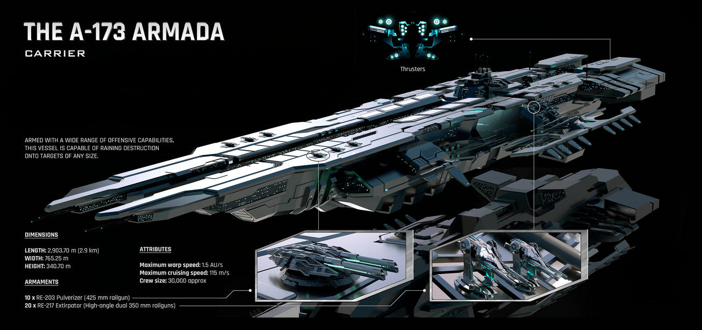
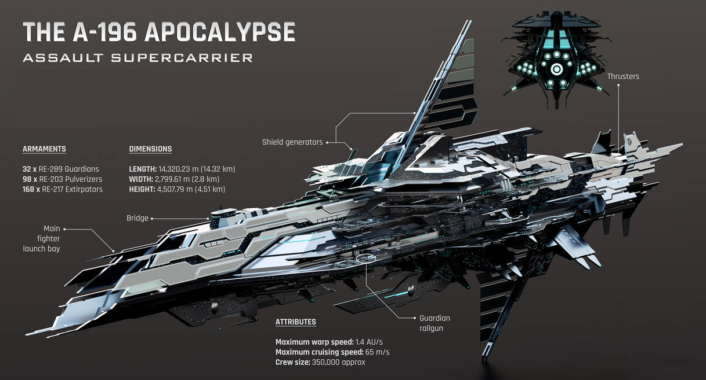
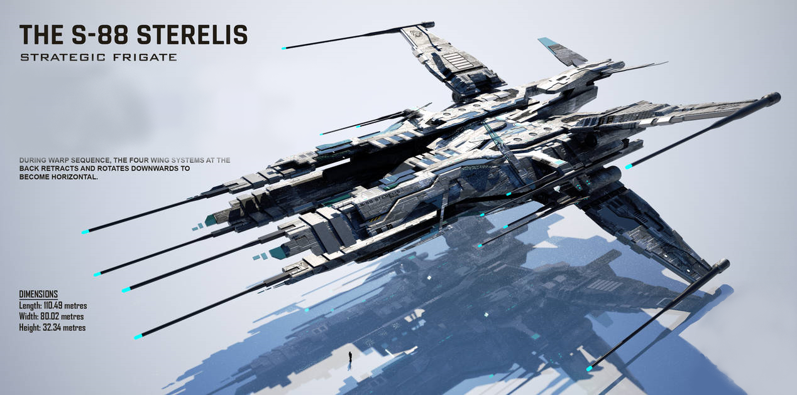
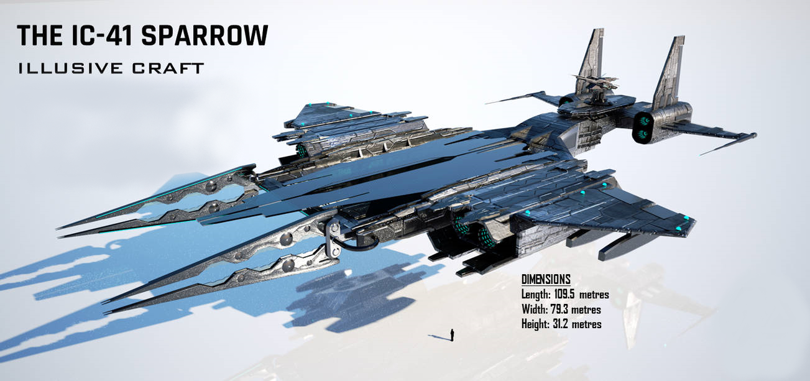

A-173 Armada Carrier
The Armada is a carrier-class ship manufactured by Nightfire Industries - The leading starship manufacturing of Hexiron, being the regular carriers of the alliance. They are commonly deployed to assist in larger battles. Nonetheless, being large enough to be classed a capital ship, they are strategic vessels that should be used responsibly within the alliance. Although they have immense shield capacities and firepower, they are in fact the most vulnerable without sufficient fleet support.
A-196 Apocalypse Assault Supercarrier
The Apocalypse is an assault supercarrier-class ship manufactured by Nightfire Industries - the leading starship manufacturing division of Hexiron. Being The Second Largest Ship Class In The Alliance, They are also known as Titans of War, significant strategic assets in the space battlefield. They are highly specialized in engaging all types targets, including superstructures.
S-88 Sterelis Strategic Frigate
The S-88 starfighter is a tier lll frigate of hexiron. Being light and fast, it excels in space combat due to its high speed and agility. Thereby putting them at a greater advantage at speed tanking damage from large enemy ships such as battleships furthermore, it also has decent firepower by having six turret hardpoints that can be fitted with either railguns, projectile cannons or laser turrets. In addition, it also has two frontal phaser cannons situated within its quadruple armor plates for forward engagements.
IC-41 Sparrow Illusive Craft
Swift and fast, the IC-41 is a specially designed unmanned craft that functions by landing vertically and opening a portal at its quadrilateral center, there by transporting goods, troops and vehicles from another location, such as space battleships instantly. This eliminates the risk of getting attacked while enroute to a destination.
A-173 Armada CarrierThe Armada is a carrier-class ship manufactured by Nightfire Industries - The leading starship manufacturing of Hexiron, being the regular carriers of the alliance. They are commonly deployed to assist in larger battles. Nonetheless, being large enough to be classed a capital ship, they are strategic vessels that should be used responsibly within the alliance. Although they have immense shield capacities and firepower, they are in fact the most vulnerable without sufficient fleet support. |
A-196 Apocalypse Assault SupercarrierThe Apocalypse is an assault supercarrier-class ship manufactured by Nightfire Industries - the leading starship manufacturing division of Hexiron. Being The Second Largest Ship Class In The Alliance, They are also known as Titans of War, significant strategic assets in the space battlefield. They are highly specialized in engaging all types targets, including superstructures. |
S-88 Sterelis Strategic FrigateThe S-88 starfighter is a tier lll frigate of hexiron. Being light and fast, it excels in space combat due to its high speed and agility. Thereby putting them at a greater advantage at speed tanking damage from large enemy ships such as battleships furthermore, it also has decent firepower by having six turret hardpoints that can be fitted with either railguns, projectile cannons or laser turrets. In addition, it also has two frontal phaser cannons situated within its quadruple armor plates for forward engagements. |
IC-41 Sparrow Illusive CraftSwift and fast, the IC-41 is a specially designed unmanned craft that functions by landing vertically and opening a portal at its quadrilateral center, there by transporting goods, troops and vehicles from another location, such as space battleships instantly. This eliminates the risk of getting attacked while enroute to a destination. |
About

Find more Information about HK and HexIron.
Learn moreBlueprints

View designs created by Fightfire Industries and our other leading designers and manufacturers.
Learn moreInfantry Showcase

Our newest installment of our Heavy infantry vehicles.
View Infantry Showcase